政治学の方法＆後半の復習
関西大学総合情報学部
2024-08-30
本講義（宋担当分）で紹介された概念を中心に解説
Demarcation problem：「科学」と「非科学」の線引
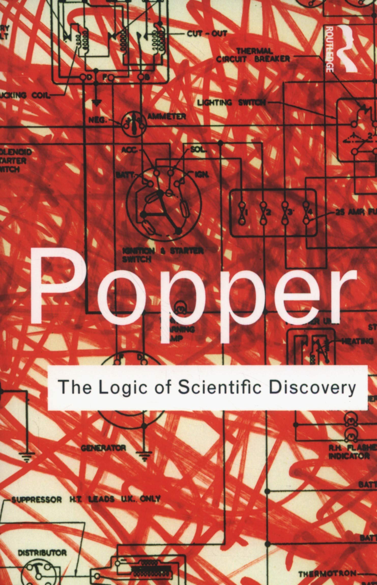
鈴木光太郎. 2008.『オオカミ少女はいなかった:心理学の神話をめぐる冒険』新曜社
教科書には正しいことだけが書かれていなければならないとは思っていない。むしろ、誤った記述があっても許されると思う（誤りは直せばよい）。科学は誤ることがあたりまえであって、そもそも科学とは、そうした誤りをたえず書き改めてゆく営みだからだ。私が許されないと思うのは、だれかが誤って書いたものをなにも考えずに受け売りしたり、それを孫引きやひ孫引きしたり、果ては先祖がたどれない引き方をしている場合である。あるいは、誤りであることが判明しても、直しもしない場合である。
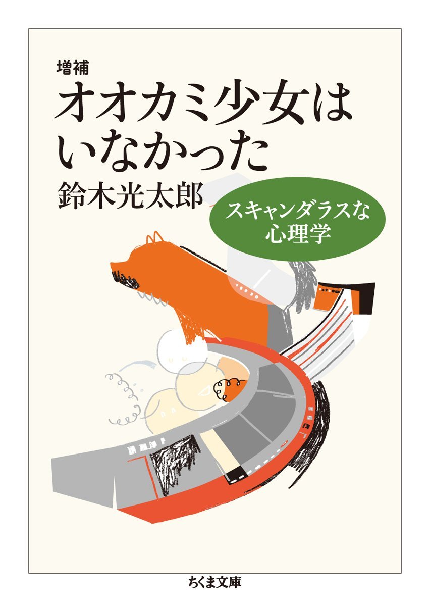
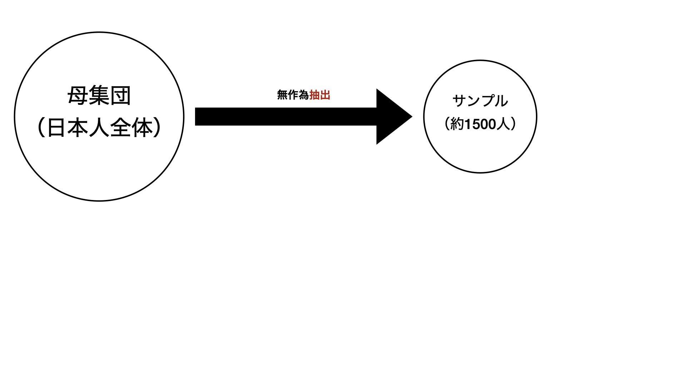
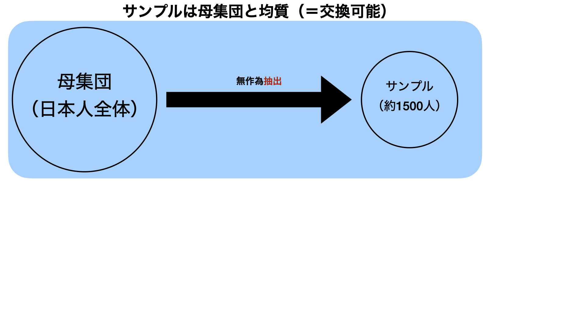
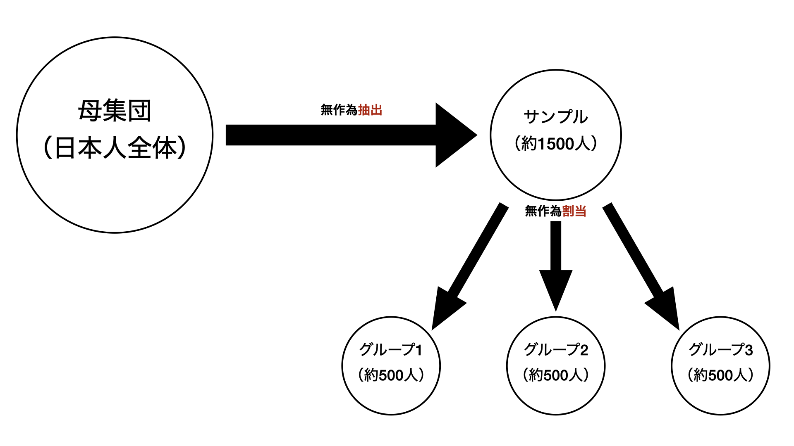
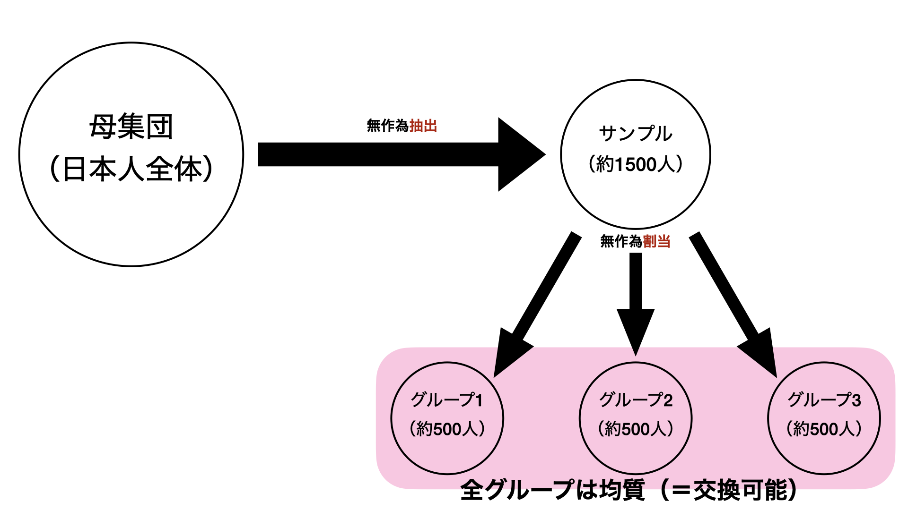
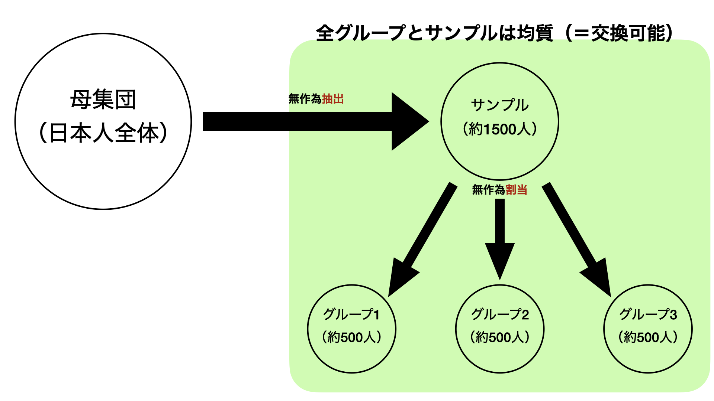
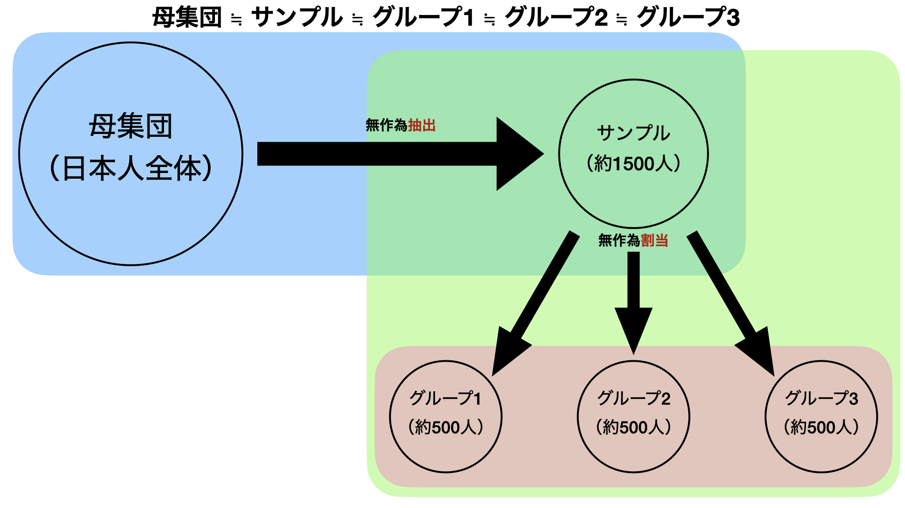
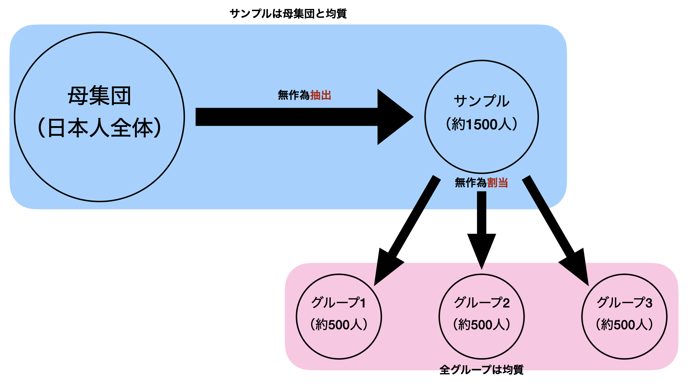
統制群
Now we are going to show you four activities that some people may experience during the electoral campaign. After you read all four, just answer HOW MANY activities you experienced during the last electoral campaign. (We do NOT want to know which ones, just how many.)
処置群
統制群と同じだが、以下の項目を追加
約32%の回答者が票売買を経験（ネットワークが濃密な地域ほどより顕著）
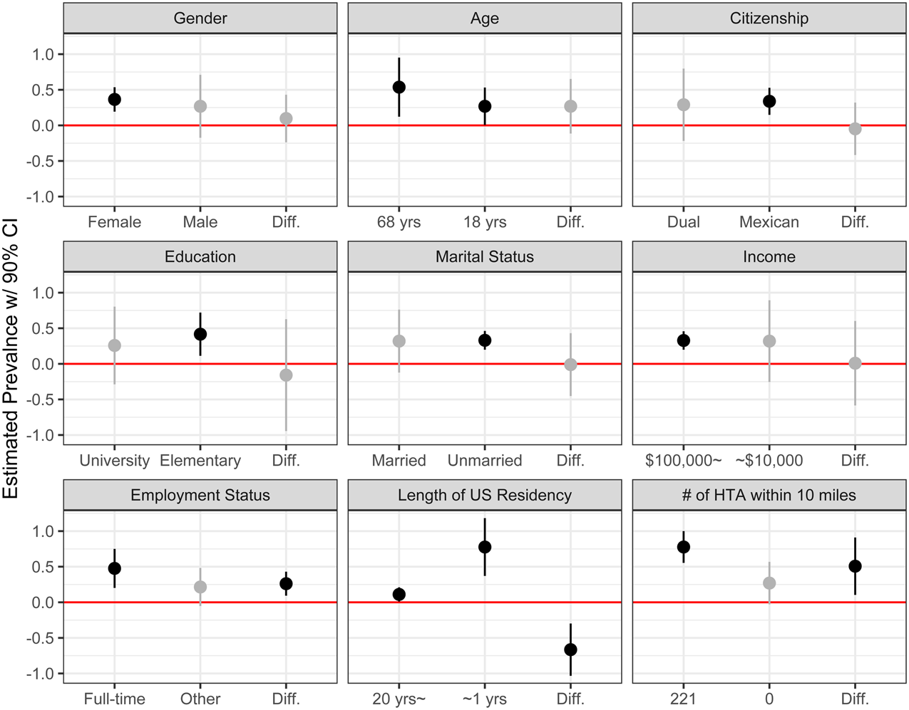
軍の経験者の収入は低い?
理想
現職効果の因果推論によく使われる回帰不連続デザイン
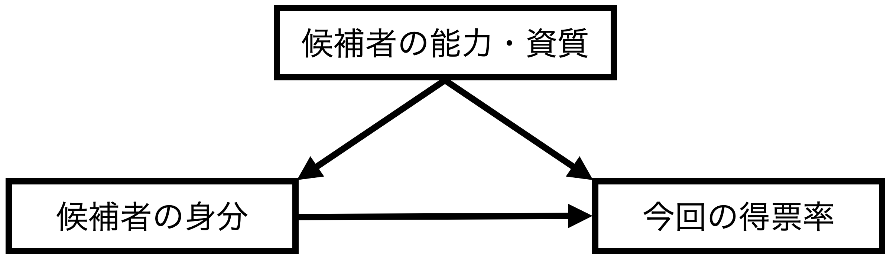
\(t-1\)期、\(t\)期いずれも同じ選挙区で同じ2名の候補者がいると仮定
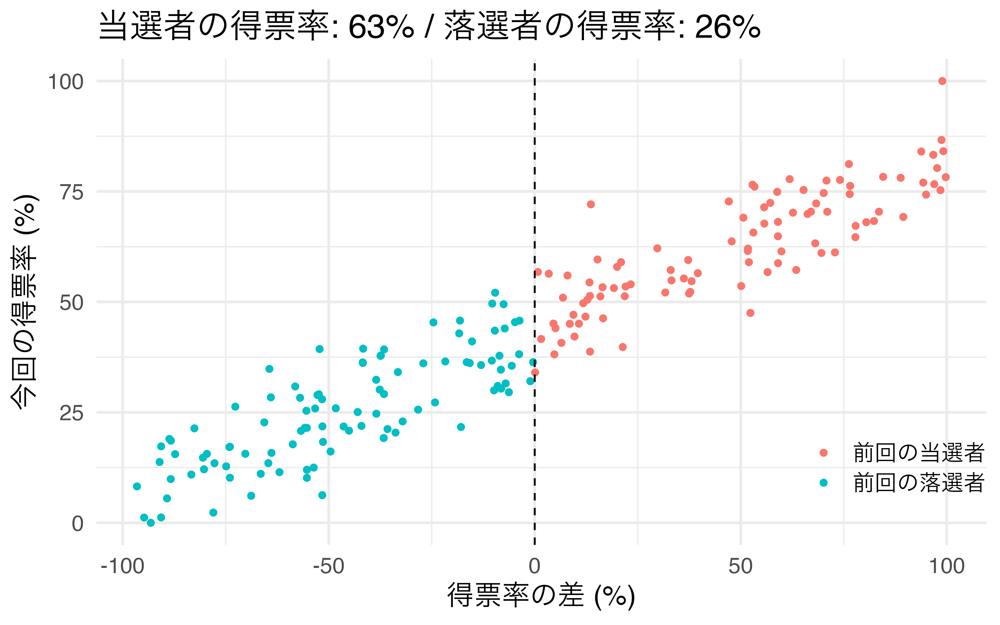
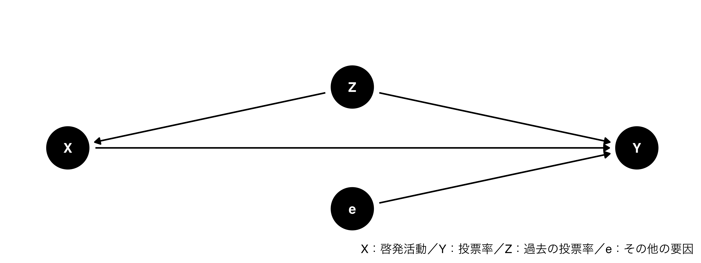
統計的仮説検定の手順
様々なやり方があるが、\(p\)値に基づいて行われることが多い。
後日公開
政治文化論（2024年度夏期集中）@神戸大学